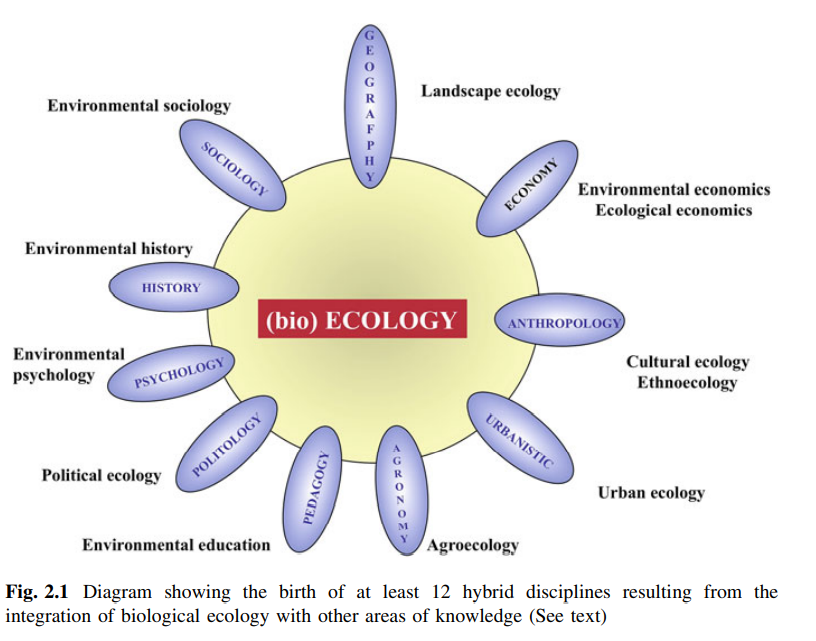

Created Tuesday 27 October 2020
@2020 @book
González de Molina, Manuel & Toledo, Victor M. (2014) The Social Metabolism: A Socio-Ecological Theory of Historical Change. Environmental History 3. Springer: Heidelberg. DOI: 10.1007/978-3-319-06358-4_1,
It is not the unity of living and active humanity with the natural, inorganic conditions of their metabolic exchange with nature, and hence their appropriation of nature, which require explanation or is the result of a historical process, but rather the separation between these inorganic conditions of human existence and this active existence, a separation which is completely posited only in the relation of wage labor and capital.
Karl Marx, Grundrisse 1973, 489.
See PPL:MARX_Karl
1
1. Introduction
1.1 Worrying About the Future
2
1.2 Exploring the Past
If science as a whole is mandated to know the past in order to learn from it, i.e., to extract lessons, it becomes necessary to guide the efforts towards achieving two objectives, both appearing as having a high degree of difficulty and being urgently required: (a) To develop an integrating (interdisciplinary) socioecological conceptual framework capable of organizing research about the relations between society and nature; and (b) The application of such framework conceived as a functional, and above all, useful instrument for analyzing such reciprocal relations
throughout history (temporal dimension), and across all scales (spatial dimension).
Already available are some relevant contributions offering accounts of the succession along the history of the human species of increasingly complex constellations built by societies throughout the territories of the planet (McNeill and McNeill 2003). What follows, is to apply to all these descriptions the pertinent analyses allowing for interpreting the social and ecological processes through time, and in consequence, offering criteria for the positioning of the present and
coming historical stages.
The book now being held by the reader belongs to the intellectual vortex that tenaciously, sometimes obsessively, and even desperately is seeking for a single
goal: to decipher the past for the sake of understanding the future. This is thus not a conventional book about history, or about ecological and environmental sciences. Its scope places it at an uncommon field of interdisciplinary knowledge that may be called ecological and social, socio-ecological, or eco-social, given that it aims at interpreting natural and social processes within their complex and intertwined articulation, or synergy. Hence, what the present book offers, in essence, is a suite of theoretical and methodological tools based on a key concept: social
metabolism.
Definition of social metabolism
Grossly defined, the concept of social metabolism introduces the biophysical analysis of exchanges between society and nature; in other words, it
3
goes beyond the conventional sociological perspective, but distancing from many reductionist approaches, it recognizes that such material exchanges are reciprocally linked to exclusively social factors. As the reader will discover, the first dimension of the analysis is focused on the flows of mater and energy, while the second concentrates on flows of information. The exploration is ambitious and saturated with risks, but is most needed in times in which interdisciplinary approaches capable of understanding the complex present situation are urgently needed.
1.3 The Book Contents
...these chapters lays the theoretical foundations for the necessary reconciliation between the discourse and
practice of social sciences and the sciences dedicated to studying the physical and biological world. History—as a field that encompasses all human action since our appearance on Earth—is particularly suited to this purpose when using innovative axiomatic, epistemology, theories of historical change and methodologies, which, among other things, break away from the traditional parceling up of scientific knowledge.
Hegemonic theories in social science separate humans from nature, legitimate the permanence of obsolete structures
Most hegemonic theories in social sciences are still tributaries of the metaphysical illusion seized by modernity, which separated the human being from nature, generating an anthropocentric fiction that still endures. Hence, accounts of our past are used more to legitimate the permanence of obsolete structures of industrial civilization than to adapt to new times, hindering awareness of change towards a sustainable society.
Environmental history as a species memory
This conception of history as environmental history requires an applied approach in which knowledge ‘‘stored’’ in the past can be highly useful to move along the path to the future, towards a more sustainable world. Environmental history must, therefore, although not exclusively, perform the role of a species memory, in which are stored the useful experiences developed by humanity as a whole throughout the history of our relationship with the natural environment. Environmental history also emphasizes the importance of processes of historical change conceived as socio-ecological transformations.
Institutions, legal rules, regimes, values, beliefs and knowledge
4
... it is recognized that all society is an assembly of phenomena pertaining to both dimensions: that of the flows of mater and energy, and that of the flows of information that organize, mold and give support to the latter in virtue of social conditionals such as institutions, legal rules and regimes, values, beliefs and
knowledge.
The exchange between society and nature of energy, mater, and information takes place within a territorial or spatial matrix comprising several scales, which means that the studied processes are hierarchically linked. Therefore, metabolic analysis can be conducted at different scales, each one being determined by, and in turn, determining other scales. The scales on which the process of appropriation can be analyzed range from the local to the global. Between these two extremes, there is a plethora of situations defined by the breadth of the scale. Hence, transscalar analysis emerges, an approach that is gaining strength in different fields of knowledge.
5
3 types of metabolic regimes: cinegetic, organic, industrial
3 key moments in historical development of humanity
3 principal criteria used to define these moments
metabolic process of appropriation
degree of transformation in the ecosystems or landscapes being appropriated
type of manipulation made of the different components, and ecological or scenic processes
Three types of metabolic regimes are presented and described, constituting three key moments in the historical development of humanity from a socioecological perspective: the cinegetic metabolism, the organic or agrarian metabolism, and the industrial metabolism. Three principal criteria are used to define these moments according to the metabolic process of appropriation: the degree of transformation in the ecosystems or landscapes being appropriated; the main sources of energy used during appropriation; and the type of manipulation made of
the different components, and ecological or scenic processes.
theory of socio-ecological transformations
2 new fields of knowledge:
sustainability science
entropy of open or dissipative systems
the process of transformation, or metamorphosis, from one metabolic regime to another, impelled over time and space by socio-ecological forces
impelling forces for socio-ecological change:
- social inequality
- territorial inequality
- politics
- social conflict (social entropy)
Cybernetic approaches to soc. metabolism undervalue relevance of human agency!
6
- social entropy, and the frictions and conflicts it triggers, have been a dimension largely ignored by the historians
- last chapter hints at the need to envision and perform a qualitative leap towards an ALTERNATIVE MODERNITY
METABOLIC CRISIS
... implies a radical rethinking of the processes of transformation, circulation, and consumption, and the unavoidable suppression of all mechanisms of social inequality, fundamentally expressed through the forced extraction of surplus—and its undervaluing throughout the metabolic chain, a hefty legacy that human society has maintained for several thousands of years—operating as a trans-metabolic phenomenon. Overall, we arrive to a key premise: that suppressing unequal exchange—social crisis—within society is the only possible way of suppressing unequal exchange between society and nature—i.e., the ecological crisis.
9
2. Environmental history as Sustainability Science
2.1 History and the Crisis of Modern Civilization
10
- most discourses regarding the past continue to maintain the same values, and to proclaim the virtues of a single social model that an increasingly fewer continue to consider as viable: the industrial society
- most historians relegate the concept of nature to a marginal place
- postmodern historiography continues to neglect nature
- discourses produced remain inside a material vacuum without physical or biological references, nor a relation to the laws of nature making social practices become possible or impossible
- metaphysical illusion that enraptured modernity: humans are segregated from nature
- "This is why some accounts of the past are frequently turned into a mere instrument for legitimizing the present."
2.2. Environmental history, a hybrid discipline
11
Fragmented objectivity & simplifying paradigm
"fragmented objectivity" - Morin 2001 found that the main limitation of the predominant style of scientific research lays in the simplifying paradigm
"Science with consciousness" (Morin 2001)
12
2.3 Sustainability Science
W:KUN KASVU LOPPUU:Sustainable Lifestyles, Livelihoods and the Circular Economy (book)
Expanded rapidly
Despite its youth, sustainable science has become a field of science that has experienced an unusual expansion. The volume of literature produced by sustainability science—which despite its diversity has given rise to a more unified scientific practice—is impressive: over thirty seven thousand authors from one hundred and seventy four countries had produced over twenty thousand papers by the year 2010 (Bettencourt and Kaurc 2011, p. 19541).
Definition of sustainability science (Kates 2011)
Sustainability science, as described by the PNAS website, is
‘‘…an emerging field of research dealing with the interactions between natural and social systems, and with how those interactions affect the challenge of sustainability: meeting the needs of present and future generations while substantially reducing poverty and conserving the planet’s life support systems (quoted in Kates 2011, p. 19449).’’
Understood at present as research that helps make the concept of sustainability operational
At present, sustainability science ‘‘is usually understood as research providing the necessary insights to make the normative concept of sustainability operational, and the means to plan and implement adequate steps towards this end (Spangenberg 2011, p. 276).’’ It is, hence, a predominantly practical or applied science...
Not merely a new discipline or a subtopic
Sustainability science is not a subtopic of other sciences, or a transversal topic, or merely a new discipline. Despite that the term encompasses several theories, methods, and orientations (Kastenhofer et al. 2011), it has emerged as a research field defined by the problems of unsustainability rather than by the disciplines it recurs to (Clark 2007; Kajikawa et al. 2007).
Must include both the science FOR and OF sustainability
Beyond possible semantic differences, sustainability science must include both the science for sustainability, and the science of sustainability.
3 constitutive features (Spangenberg 2011)
- must be linked to a defined objective
- approach to the complex topics is based on integrated analysis and evaluations, understood as iterative participatory processes that couples knowledge with action (politics)
- multidisciplinary, extraordinarily so
According to Spangenberg (2011, p. 276), sustainability science is characterized by three constitutive features, over which some consensus seems to exist: it may be basic or applied research, but it must be linked to a defined objective; the approach to the complex scientific and technological topics is based on integrated analyses and evaluations, understood as iterative participatory processes of reflection and discussion in that knowledge (science) is coupled with action (politics); the participation in it of scientists, decision makers, and stakeholders is essential. Finally, it is indispensable that sustainability science is multidisciplinary, or as stated by Clark and Levin (2010, p. 6), ‘‘extraordinarily multidisciplinary.’’
13
2.4 What is Environmental History, and What Are Its Goals
or ecological history, not to be confused with historical ecology
14

15
Historical ecology more oriented towards physical and biological
Environmental History has a more social focus
Societies as human ecosystems, or as subsystems of the more inclusive system of nature
Hughes 20002:25 tried a precise conceptual perception of Environmental History:
‘The idea of environment as something separate from the human, and offering merely a setting for human history, is misleading. The living connections of humans to the communities of which they are part must be integral components of the historical account. Whatever humans have done to the rest of the community has inevitably affected themselves. To a very large extent, ecosystems have influenced the patterns of human events. We have, in turn, have to an impressive degree made them what they are today. That is, humans and the rest of the community of life have been engaged in a process of coevolution that did not end with the origin of the human species, but has continued to the present day. Historical writing should not ignore the importance and complexity of that process (Hughes 2002, p. 25)’’.
16
The objective of env. history is the study of human beings within environment
the objective of Environmental History is not the study of the (natural) environment, but of human beings within environment, i.e., of the relations between society and nature through time.
...
doesn't pretend to build a new narrative of human evolution to replace e.g. Marxism
Environmental History is thus a part of the history of humanity throughout its evolution in the planet. It does not pretend to build a new narrative of human evolution that replaces contemporaneous theories such as Marxism or Functionalism, among others: such a pretension was buried by the crisis of modernity.
Env. history is just one of the crumbs in which historical research disintegrated in postmodernity
But Environmental History is neither a new historiographical specialty to be added to those already existing—Economic, Agrarian, Political, and Social History, or that regarding mentality of social movements—nor does it operate independently from them. It is just one of the crumbs in which historical research disintegrated in present times of postmodernity. Environmental History uses theories, methods, and constructs narrations that are part of Economic History, Political History or Social History. Thus, the knowledge it provides is transversal across existing disciplines, as transversal is its position regarding many of the ongoing historiographical debates from which it nourishes.
env. history does not pretend to understand all from the environmental perspective
17
Environmental History is thus far from any imperialistic attitude regarding its methods and its theories, as is believed to be by some historians who hold that historical knowledge should be reserved to the exclusive and unpolluted realm of pure Social Science; it does not claim that all historical phenomena have an environmental explanation, even when this is necessary a part of the explanations given to a historical event. Many historical facts can be explained taking into account variables of an environmental nature, but many others can definitively not be such accounted for. Although environmental variables provide much more coherent explanations to certain trends and historical phenomena, Environmental History resigns to explain it all with the environmental prism, or to build a new meta-narrative in which the environment is the deus ex machina providing the key for understanding. Environmental History is an alternative way of understanding evolution of human beings, which requires of a radical change in focus.
To the same extend that History studies human societies and their past evolution, Environmental History attempts to understand the strategic relations established by human beings—both between themselves and with nature—in order to organize their subsistence. The historical account must consider the relations of humans with the communities of organisms to which they belong, and account for the fact that any effect over the former will affect the latter (Hughes 2002, p. 26). For that reason, History needs to be also Environmental History; it must be an inseparable part of historiographical discourse, which is therefore ecologized.
18
Env. hist. essentially materialistic and naturalistic
Environmental History essentially deals with the material base of social relations. In that sense, it is consequently materialistic and naturalistic (Prices 2011). Such a qualification does not, however, imply that it chooses a materialistic and objectivist theoretical over an idealistic standpoint, as artificially suggested by the dichotomy in the social sciences during modernity. Naturalism, as materiality refers here to the object of Environmental History, the flows of energy, materials, and information to which all human practice can be reduced, but also to material nature of any cultural dimension of human practice. Materialism must mean not believe that cultural forms of production and consumption are determined by the by the forces of environment, only the cultural behavior occurs within a material world whose properties limit what is possible and determine the environmental consequences of that behavior.
Specificity of cultural motivations and the universality of material laws
In other words we need to support both the specificity of cultural motivations such as the universality of material laws (Hornborg 2007).
...
As will be seen below, all individual—this including social groups or an entire society—consumes a given amount of energy and materials to feed and sustain its organism, to commute from one place to another, to dress, warm-up, and even to perform immaterial actions such as cultural and scientific activities. In this process, the individual establishes relations with nature and with other individuals that are relevant for Environmental History. However, to explain these relations is not a task corresponding exclusively to Thermodynamics, Chemistry, Physics, or Biology, but also to Sociology, Economy, Anthropology, and of course, also to History.
2.5 Is Environmental History Anachronic or Ephemeral?
19
Is the focus on placing nature at the base of human practice just a fashion caused by present environmental concerns?
i.e. anachronic?
As rightly said by Hornborg et al. (2007), the interphase between the human and not-human spheres has always been an omnipresent theme for reflection and cosmological explanation, from the ancient written documents from Mesopotamia and China, to the myths and metaphors of contemporaneous indigenous people.
...
e.g. Grove 2002 provides examples of environmentalist reactions dating to 15th century
Grove (2002), among many other historians, dealt with this fact considering a common fallacy to conceive environmental concerns to be new, beginning after World War II. Environmentalist reactions to changes induced by human beings originated early in the well-read culture, of which Grove (2002) provides multiple examples occurring from the 15th century to the present.
...
Environment is not only a physical space defined by complexity and entropy, but also a social construct, which throws a shadow upon the assumed universality and uniqueness of the categories nature and culture, and on their artificial separation caused by modernity (Redclift and Woodgate 2005).
conceptual differentation b/w nature & culture a construct of Western culture
20
2.6 The Theoretical Foundations of Environmental History
The natural laws in the physical and biological environment constraints the actions of human beings, but nothing more or less than that.
Environmental History opposes any form of unidirectionality in the relation between the physical and biological environment such that human behavior can be explained in terms of the relation between society and nature. The natural laws in the physical and biological environment constraints the actions of human beings, but nothing more or less than that. This clarification becomes essential, because Environmental History is frequently disqualified as deterministic, a pejorative adjective whose use precludes any serious and well-supported rebuttal of argumentations.
...
dynamics of societies not understandable solely from animal models
another more modern version of determinism equally threatens the
scientific coherence of Environmental History: the pretension of some social ecologists of understanding the dynamics of societies by means of theoretical assumptions from Ethology or Population Ecology.
21
NO to sociobiology, fatalism
Pretending that ecological laws could explain the dynamics
of human societies would be as preposterous as thinking it could be explained without the influence of such laws. Variations of this environmental reductionism can also be found in the attempts made for explaining human evolution in energetic terms (Odum 1972), or in the fatalism advocating the mechanical application of the Law of Entropy (Rifkins 1990).
NO to functionalist explanations of human/env relations
Harris is an adept of functionalist explanations of relations between humans and their environment, attempting to explain facts for their beneficial effect for the reproduction of the social system— for example, war is useful for lowering the growth rate of the population, which guarantees the reproduction of the ecological niche and thus, of the community. The fact that an event is useful does not imply that such usefulness explains the event: war cannot be explained by its consequences. A similar argumentation would be valid for the Ecological Anthropology of Hardesty (1979).
2.7 Environmental History and the Coevolution Between Nature and Society
Double determination
More recently, it has been proposed to understand the relation between nature and societies as a process of coevolution in which both interact along time, being thus impossible to understand them separately.
22
Undoubtedly nature establishes limits to human behavior,
to which it sometimes reacts adaptively, other times developing solutions that change the scale or disappear. It is also certain that society generates diverse impacts on nature
...
But the recognition of this reciprocity does not imply that both be considered as separate worlds having their own dynamic and interacting through time. It is a way of seeing things that improves our comprehension of human relation with the natural world, but it does not implicate a fundamental shift regarding traditional conceptions.
Env.Hist supported on the principle of social and ecol. COEVOLUTION
Environmental History is hence supported on the principle of social and ecological coevolution. The work of Norgaard (1994)—to whom the foundation as a principle of Environmental History is due–emphasizes that people’s activities transform ecosystems and these in turn, set scenarios for individual and social acts.
...
Social Metabolism: material relationships
Thus, Environmental History considers society within nature, with which human beings establish material relationships of exchange of energy, materials, and information. The concept of social metabolism has been adopted to refer to this multiple determinant relation...
Human societies hybrids b/w culture, communication, & material world
Human societies thus can be conceived as a hybrid between culture, communication, and the material world (Fischer-Kowalski and Haberl 2007, pp. 8–10). In that measure, the cultural or symbolic moiety is subject to a dynamic not belonging to the natural environment. But all human actions, including the symbolic part, can be analyzed in material terms: for example, a music concert that is seen as the paradigm of a cultural practice subject to non material rules, can also be evaluated by calculation of the endosomatic cost of energy invested by musicians during the performance and in previous rehearsals, but above all, in the exosomatic cost of transportation, instrument manufacture, illumination and maintenance of the concert hall, and so on.
23
Env.hist as the history of the ecological rationality
Environmental History must be something more than the history of the negative externalities, it must also be the history of the ecological rationality in broad sense of each human society
...
Env.hist studies social processes with env. significance
Environmental History studies social processes with environmental significance, in a system in which, through complex relations, the physical, social, economic, and political factors intertwine.
24
Fronde confrontation & rainfall 1646-51
Le Roy Ladurie (1967) showed that continued rainfalls between 1646 and 1651 were coincident with profound economic and social problems eventually leading to the Fronde confrontation, and although no causal relation between climate and the insurrection exists the climatic alteration generated a critical scenario.
High corr. b/w meteorological variables & price of cereals
Less prolonged climatic fluctuations also have had a significant effect on the evolution of agricultural activities, as exemplified by the high correlation found by Pfister (1988) between meteorological variables and the prices of cereals in the continental Europe lasting until the diffusion of railroad transportation and the integration of the national markets.
2013 meta-analysis demonstrated considerable influence of climatic events and human conflicts
A recent meta-analysis made by of Hsiang et al. (2013) of 60 studies based on 45 databases about conflicts taking place during the last ten thousand years in the world has demonstrated a considerable influence of climatic events and human conflicts. The deviations from normal precipitation and temperature levels systematically raised the risk of conflict, sometimes substantially so.
25
from the second half of the twentieth century to the present, climate has a definite, statistically highly significant influence on contemporaneous conflicts. The authors do not mean to say that climate is the only factor when analyzing the magnitude of conflicts, but they conclude that in the eventuality of large climatic fluctuations substantial effects are produced in terms of the impact produced by conflicts (Hsiang et al. 2013).
Great Acceleration
Environmental History must encompass the social and the ecological timetables, which requires the coining of new—and perhaps proprietary— periods differing from those of conventional History, as for example the period of Great Acceleration characterized by the high increases in the rates of consumption of energy and materials occurred immediately after World War II, but coinciding in essential hiatuses such as the Neolithic Revolution or the Industrial Revolution, among others.
2.8 Sustainability, the New Meaning of History
Meaning of history: maximization of wellbeing?
In the beginning of this chapter we mentioned the Copernican revolution implied in substitution of conventional historiography for Environmental History. Certainly, History does not have to have a meaning. The project of the modern historiography was founded from the laic interpretation of the Christian meaning of history, and incarnated through the construct of progressive reasoning (Arostegui 1995; Hernández Sandoica 2004). History happened along a single line
calculated by science and its applications, and hence guided by reason. The mission of modern man was to accelerate the evolutionary mechanism aided by Nature itself to achieve the maximum level of wellbeing. Progress therefore materialized as abundance brought about by science and technology.
preponderance of economic history, roles of social history
This perspective explains the preponderance enjoyed by Economic History not only because it accounted the material advances made towards human progress in the form of technological achievements, but also because it did this by using Mathematics, the science most approaching Natural Sciences. Social History, second in importance, found its meaning in the corroboration of an evolutionary process towards evermore complex social models as an expression of the progressive social division of labor linked to economic growth and the material welfare of societies. Complexity was, henceforth, an expression of the growing rationalization of social organization. Political History was assigned to a secondary role consisting in measure the degree of political modernization of societies based on an abstract model concocted from the past experiences of the more affluent Occidental societies in which democracy and National states had been enthroned as the most efficient political organizations.
26
"Empire of Reason"
...orthodox Marxist historiographies identified the modern ideal with Socialism and Communism, and with internationalist forms of territorial organization, but all social historiographies converged in preferring to study the social change towards complexity and the empire of reason, be it as a Communist society or as a Western democracy; a change performed by social classes, or by their expression through social movements.
Meaning of env.hist: elaboration of a discourse centered on the concerns of sustainability
History dos not have to have a definite meaning, nor the historical discourse needs a finalistic or teleological evolutionary logic. However, Environmental History finds it meaning in the elaboration of a discourse centered on the concerns for sustainability, in coherence with its materialistic vocation. This does not mean that it only deals with the physical and biological worlds, or of the environmental constraints to human actions.
...
Contribution of env.hist: the concern for sustainability
The definitive contribution of the environmental approach is the concern for sustainability. In doing such, it becomes a science that is committed with the uncountable social and political movements struggling throughout the world for constructing a new sustainable society (Toledo 2003).
2.9 Epistemological Foundations of Environmental History
Paradigm of complexity
Environmental History is thus tightly linked to the ecological paradigm that arises from the confrontation with the world vision of industrial modernity. It shares most of the assumptions of the paradigm of complexity (see Tyrtania 2008).
...
From Thermodynamics, it adopted the conception that physical and biological processes in terms of finiteness, irreversibility, entropy—and simultaneously, of negentropy and order (Prigogine 1971; Adams 1975; Bailey 1990), i.e., of sustainability. From Systems Theory (Bertalanffy 1976; Luhmann 1996) were taken the holistic and systemic approach allowing for articulating concepts and theoretical constructs from Ecology, Thermodynamics, and Evolutionary Theory.
27
Multicausality
Confronting the idea that al consequences have a cause, it proposes multicausality as a reflection of the complexity of reality, where consequences contribute to configure the causes.
Interactions b/w individuals make society, society produces individuals
‘‘… interactions between individuals make society (…). However, society itself produces individuals, or at least consummates humanity by providing it with education, culture, and language (Morin [1999] 2007, p. 68).’’
28
2.10 History as a Post-normal Science
Appreciation of unpredictable consequences
Post-normal science, being aware of the uncertainty of scientific knowledge, and of the sometimes unpredictable consequences of the same discoveries it produces, is cautious of talking the appropriate steps to guarantee that the decisions made, and the control of scientific and technological development itself, be socially shared. Funtowicz and Ravetz (2000) propose epistemological changes—i.e., modifying the relation between facts and values, promoting axiological and strategic pluralism, introducing uncertainty and chaotic processes, adopting the systemic approach, articulating qualitative and quantitative methods, an others—and, in the social plane, the introduction of a qualitative criterion for socially evaluating the scientific and technological activities.
29
2.11 Environmental History and the Ecological Paradigm
Knowledge defined by its social usefulness
Environmental History adapts its modus operandi according to this new way of generating knowledge, not pursuing—as did the old positivistic and neo-positivistic historiographies—to arrive to the truth about what happened, but to produce a knowledge with quality, i.e., defined by its social usefulness.
The intellectual quest for knowing other past cultures and even to learn from their experience is legitimate, but in doing so we would only be making the history of the past that is useful only to scholars and the curious. The environmental crisis demands immediate solutions in which search Environmental History must contribute.
Urgent task: history of the present
... a more urgent task is to make the history of the present, i.e., to search for the historical roots of the greatest environmental problems in the present.
30
Environmental shift: away from Marxist and Annalist totalism
To contemplate history from the perspective of the ecological paradigm implies to make a radical shift in the historiographical discourse, paraphrasing Rorty (1990), a necessary environmental shift. That, in turn, implies to reconcile society with nature, to place nature back where it should have never been moved from, inside the historiographical discourse from where it was removed by modern historiography. But it also requires abandoning the totalitarian and scientist pretensions of Marxist historiography, or the total history of the Annals, but without resigning to the aspirations of globalism, or to the consideration of its full equality with other social sciences. As righteously written by Cronon (1993), Environmental History is totally comprehensive, it is the only truly general or universal history.
...
Recognizing the existence of several histories within society
Environmental History resigns to the unitary and totalitarian project of modern historiography, hence, it recognizes the existence of several histories within each society, varying in their scale, purpose, content, and organization. For example,
there are individual and family histories, church histories, ethnic group histories, and often, a master narrative promoted by the State. There should also be an Environmental History.
31
Would one recognize the history they lived through?
The compilation of History is a social process consistent in a differential retention, either active or passive, of historical facts, and their organization in the group’s memory (Hassan 2007, p. 172). The historical discourse, as in the case of a map, is a representation of reality, but not reality itself. As stated by Gaddis (2002, p. 176), ‘‘it is a pitiful approximation to a reality which, despite the skill of the historian, would seem very strange to anyone having actually lived through it.’’
Narrative as a goal
The goal is to generate a narrative having a beginning, a plot, and an end or moral bottom line. It is not about telling what happened, which would be preposterous, given the time needed for such an intrinsically impossible task. It is about building a narrative that simplifies and makes understandable what happened, a story subject to future interpretations, and above all, devoid of any causality relation typical of more conventional historiographies. A plurality of causes can be argued in order not to define the historical event, but to explain it.
Collingwood & The Idea of History
Collingwood, in his The idea of History wrote: ‘‘Each new generation must rewrite history in their own way, each new historian, not content with giving new answers to old questions, you should review the questions themselves, and—since the historical thinking is a river in which no one can enter twice—to the same historian who works on the same subject for some time may, in trying to rethink an old question find that the question itself has changed.’’
{kind=link}